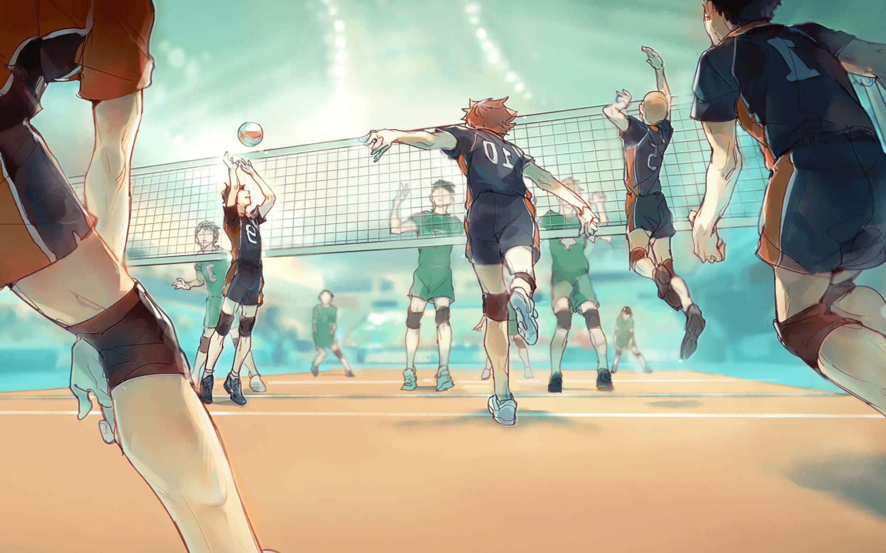

INDOOR GAMES

Chess is a board game for two players. It is sometimes called international chess or Western chess to distinguish it from related games such as xiangqi (Chinese chess) and shogi (Japanese chess).
Chess is an abstract strategy game that involves no hidden information and no elements of chance. It is played on a chessboard with 64 squares arranged in an 8×8 grid. The players, referred to as "White" and "Black", each control sixteen pieces: one king, one queen, two rooks, two bishops, two knights, and eight pawns. White moves first, followed by Black. The game is won by checkmating the opponent's king, i.e. threatening it with inescapable capture. There are several ways a game can end in a draw.

The recorded history of chess goes back at least to the emergence of a similar game, chaturanga, in seventh-century India. After its introduction in Persia, it spread to the Arab world and then to Europe. The rules of chess as they are known today emerged in Europe at the end of the 15th century, with standardization and universal acceptance by the end of the 19th century. Today, chess is one of the world's most popular games and is played by millions of people worldwide.

Carrom is a tabletop game of Indian origin in which players flick discs, attempting to knock them to the corners of the board. In South Asia, many clubs and cafés hold regular tournaments. Carrom is commonly played by families, including children, and at social functions. Different standards and rules exist in different areas.

The game of carrom originated in India. One carrom board with its surface made of glass is still available in one of the palaces in Patiala, India. State-level competitions were being held in the different states of India during the early part of the 20th century. Serious carrom tournaments may have begun in Sri Lanka in 1935; by 1958, both India and Sri Lanka had formed official federations of carrom clubs, sponsoring tournaments and awarding prizes.
The International Carrom Federation (ICF) was formed in the year 1988 in Chennai, India. The formal rules for the Indian version of the game were published in 1988. In the same year the ICF officially codified the rules. The UKCF was formed in 1991 in London. The main work of this organisation is to promote the game of Carrom throughout the UK and ensure the participation of UK players in all major international championships.The UKCF have hosted 3 Euro cups in England and have had fantastic success in the tournament with UK players. UKCF organised national championships and league tournaments throughout the UK on annual basis.

Ludo (/ˈljuːdoʊ/; from Latin ludo '[I] play') is a strategy board game for two to four[a] players, in which the players race their four tokens from start to finish according to the rolls of a single die. Like other cross and circle games, Ludo is derived from the Indian game Pachisi.[1] The game and its variations are popular in many countries and under various names.

Special areas of the Ludo board are typically coloured bright yellow, green, red, and blue. Each player is assigned a colour and has four tokens[c] in their colour. The board is normally square with a cross-shaped playspace, with each arm of the cross having three columns of squares, usually six per column. The middle columns usually have five squares coloured; these represent a player's home column. A sixth coloured square not on the home column is a player's starting square. At the centre of the board is a large finishing square, often composed of coloured triangles atop the players' home columns (thus depicting "arrows" pointing to the finish).

Snakes and ladders is a board game for two or more players regarded today as a worldwide classic.[1] The game originated in ancient India as Moksha Patam, and was brought to the United Kingdom in the 1890s. It is played on a game board with numbered, gridded squares. A number of "ladders" and "snakes" are pictured on the board, each connecting two specific board squares. The object of the game is to navigate one's game piece, according to die rolls, from the start (bottom square) to the finish (top square), helped by climbing ladders but hindered by falling down snakes.

The game is a simple race based on sheer luck, and it is popular with young children.[2] The historic version had its roots in morality lessons, on which a player's progression up the board represented a life journey complicated by virtues (ladders) and vices (snakes). The game is also sold under other names, such as the morality-themed Chutes and Ladders which was published by the Milton Bradley Company starting in 1943.

Uno (/ˈuːnoʊ/; from Spanish and Italian for 'one'), stylized as UNO, is a proprietary American shedding-type card game originally developed in 1971 by Merle Robbins in Reading, Ohio, a suburb of Cincinnati, that housed International Games Inc., a gaming company acquired by Mattel on January 23, 1992.
:max_bytes(150000):strip_icc()/how-to-play-uno-4169919-hero-2c26a4843b9d4d908e760df80687e445.jpg)
Played with a specially printed deck, the game is derived from the crazy eights family of card games which, in turn, is based on the traditional German game of mau-mau.
OUTDOOR GAMES

Volleyball is a team sport in which two teams of six players are separated by a net. Each team tries to score points by grounding a ball on the other team's court under organized rules. It has been a part of the official program of the Summer Olympic Games since Tokyo 1964. Beach volleyball was introduced to the programme at the Atlanta 1996 Summer Olympics. The adapted version of volleyball at the Summer Paralympic Games is sitting volleyball.
The complete set of rules is extensive, but play essentially proceeds as follows: a player on one of the teams begins a 'rally' by serving the ball (tossing or releasing it and then hitting it with a hand or arm), from behind the back boundary line of the court, over the net, and into the receiving team's court.

Cricket is a bat-and-ball game that is played between two teams of eleven players on a field, at the centre of which is a 22-yard (20-metre) pitch with a wicket at each end, each comprising two bails balanced on three stumps. Two players from the batting team (the striker and nonstriker) stand in front of either wicket holding bats, with one player from the fielding team (the bowler) bowling the ball towards the striker's wicket from the opposite end of the pitch.
The striker's goal is to hit the bowled ball with the bat and then switch places with the nonstriker, with the batting team scoring one run for each exchange. Runs are also scored when the ball reaches or crosses the boundary of the field or when the ball is bowled illegally.
The fielding team tries to prevent runs from being scored by dismissing batters (so they are "out"). Means of dismissal include being bowled, when the ball hits the striker's wicket and dislodges the bails, and by the fielding side either catching the ball after it is hit by the bat but before it hits the ground or hitting a wicket with the ball before a batter can cross the crease in front of the wicket. When ten batters have been dismissed, the innings ends and the teams swap roles.
Basketball is a team sport in which two teams, most commonly of five players each, opposing one another on a rectangular court, compete with the primary objective of shooting a basketball (approximately 9.4 inches (24 cm) in diameter) through the defender's hoop (a basket 18 inches (46 cm) in diameter mounted 10 feet (3.048 m) high to a backboard at each end of the court), while preventing the opposing team from shooting through their own hoop. A field goal is worth two points, unless made from behind the three-point line, when it is worth three. After a foul, timed play stops and the player fouled or designated to shoot a technical foul is given one, two or three one-point free throws. The team with the most points at the end of the game wins, but if regulation play expires with the score tied, an additional period of play (overtime) is mandated.

Players advance the ball by bouncing it while walking or running (dribbling) or by passing it to a teammate, both of which require considerable skill. On offense, players may use a variety of shots – the layup, the jump shot, or a dunk; on defense, they may steal the ball from a dribbler, intercept passes, or block shots; either offense or defense may collect a rebound, that is, a missed shot that bounces from rim or backboard. It is a violation to lift or drag one's pivot foot without dribbling the ball, to carry it, or to hold the ball with both hands then resume dribbling.
Football is a family of team sports that involve, to varying degrees, kicking a ball to score a goal. Unqualified, the word football generally means the form of football that is the most popular where the word is used. Sports commonly called football include association football (known as soccer in Australia, Canada, South Africa, the United States, and sometimes in Ireland and New Zealand); Australian rules football; Gaelic football; gridiron football (specifically American football, arena football, or Canadian football); International rules football; rugby league football; and rugby union football.[1] These various forms of football share, to varying degrees, common origins and are known as "football codes".
There are a number of references to traditional, ancient, or prehistoric ball games played in many different parts of the world.[2][3][4] Contemporary codes of football can be traced back to the codification of these games at English public schools during the 19th century, itself an outgrowth of medieval football.

Badminton is a racquet sport played using racquets to hit a shuttlecock across a net. Although it may be played with larger teams, the most common forms of the game are "singles" (with one player per side) and "doubles" (with two players per side). Badminton is often played as a casual outdoor activity in a yard or on a beach; formal games are played on a rectangular indoor court. Points are scored by striking the shuttlecock with the racquet and landing it within the other team's half of the court.
Each side may only strike the shuttlecock once before it passes over the net. Play ends once the shuttlecock has struck the floor or ground, or if a fault has been called by the umpire, service judge, or (in their absence) the opposing side.
The shuttlecock is a feathered or (in informal matches) plastic projectile that flies differently from the balls used in many other sports.